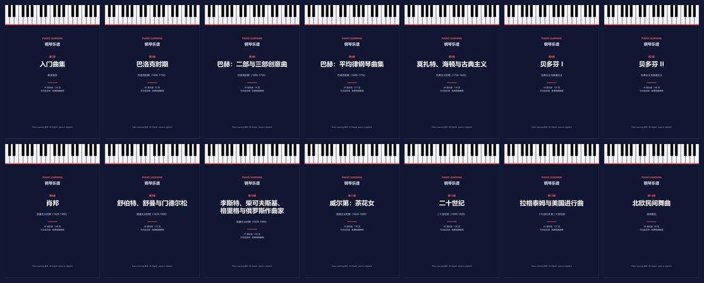
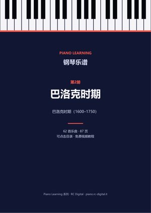
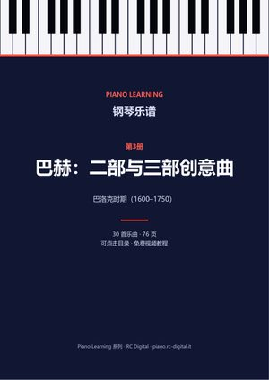
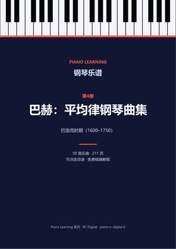
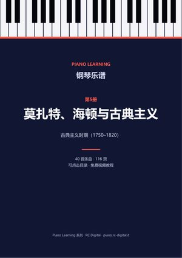
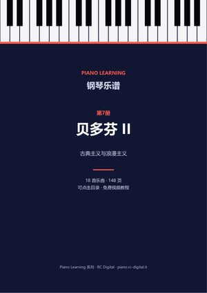
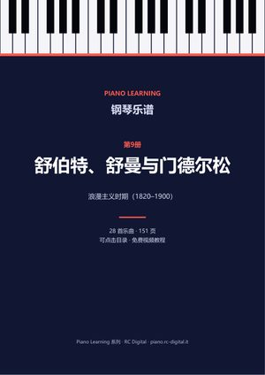
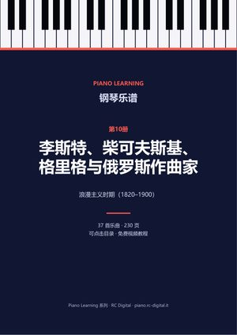
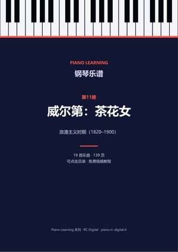
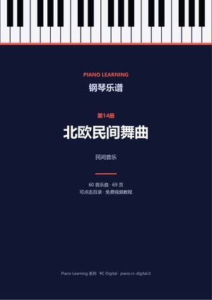

第15册圣诞歌曲与简易旋律41 首乐曲 · 54 页
第15册圣诞歌曲与简易旋律41 首乐曲 · 54 页€3.99购买
Piano Learning · PDF
564 首乐曲 · 1933 页乐谱 · 14 册 · 10 种语言

第15册圣诞歌曲与简易旋律41 首乐曲 · 54 页 第1册入门曲集74 首乐曲 · 132 页
第1册入门曲集74 首乐曲 · 132 页
第2册巴洛克时期62 首乐曲 · 87 页
第3册巴赫：二部与三部创意曲30 首乐曲 · 76 页
第4册巴赫：平均律钢琴曲集59 首乐曲 · 211 页
第5册莫扎特、海顿与古典主义40 首乐曲 · 116 页 第6册贝多芬 I18 首乐曲 · 125 页
第6册贝多芬 I18 首乐曲 · 125 页
第7册贝多芬 II18 首乐曲 · 148 页 第8册肖邦46 首乐曲 · 186 页
第8册肖邦46 首乐曲 · 186 页
第9册舒伯特、舒曼与门德尔松28 首乐曲 · 151 页
第10册李斯特、柴可夫斯基、格里格与俄罗斯作曲家37 首乐曲 · 230 页
第11册威尔第：茶花女19 首乐曲 · 139 页 第12册二十世纪40 首乐曲 · 136 页
第12册二十世纪40 首乐曲 · 136 页 第13册拉格泰姆与美国进行曲33 首乐曲 · 127 页
第13册拉格泰姆与美国进行曲33 首乐曲 · 127 页
第14册北欧民间舞曲60 首乐曲 · 69 页点一下目录里的曲名，就直接跳到那一页，还带书签。
用几行文字告诉你，你正在弹的音乐是谁写的。
从乐谱直达下落音符视频，凡有教程的乐曲都附链接。
一次购买，即可下载你喜欢的语言版本。
全套中四首乐曲的第一页。点击页面即可打开该乐曲。
PDF 格式。可以在电脑、平板和手机上打开，也可以打印。每册是一个文件，带可点击目录和书签。
每次购买都包含10种语言的版本：意大利语、英语、德语、西班牙语、法语、葡萄牙语、俄语、中文、日语和韩语。下载你喜欢的那一种即可。
付款后会立即打开下载页面，同时你会收到一封带链接的电子邮件。单册是一个 PDF；全套是每种语言一个 ZIP 文件，内含14个 PDF（约 50 MB）。
可以。这些都是自由版本（公有领域或 Creative Commons），本站各乐曲页面都有免费链接。全套则把它们按作曲家和时期整理好，附目录、生平、教程链接以及每个版本的完整来源。
不包含。第15册《圣诞歌曲与简易旋律》需单独购买，售价 €3.99。全套包含第1册至第14册。
通过 Payhip 安全付款，付款后立即通过电子邮件下载。这些乐谱是自由版本（公有领域或 Creative Commons）：你也可以在本站各乐曲页面免费逐首获取；这里把它们全部整理在一个文件中，并附每个版本的完整来源。